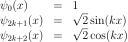
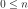
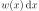
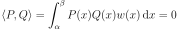
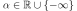
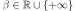

FourierSeriesFactory¶
(Source code, png, hires.png, pdf)
{kind=link}
{kind=link}
- class FourierSeriesFactory(*args)¶
Fourier series function factory.
Generates the Fourier basis defined as follows:

Methods
build(order)Build the
 -th order orthogonal univariate function.
-th order orthogonal univariate function.Accessor to the object's name.
getId()Accessor to the object's id.
Accessor to the associated probability measure.
getName()Accessor to the object's name.
Accessor to the object's shadowed id.
Accessor to the object's visibility state.
hasName()Test if the object is named.
Test if the object has a distinguishable name.
setName(name)Accessor to the object's name.
setShadowedId(id)Accessor to the object's shadowed id.
setVisibility(visible)Accessor to the object's visibility state.
- __init__(*args)¶
- build(order)¶
Build the
-th order orthogonal univariate function.- Parameters
- nint, 
Function order.
- Returns
- function
UniVariateFunction Requested orthogonal univariate function.
- function
- getClassName()¶
Accessor to the object’s name.
- Returns
- class_namestr
The object class name (object.__class__.__name__).
- getId()¶
Accessor to the object’s id.
- Returns
- idint
Internal unique identifier.
- getMeasure()¶
Accessor to the associated probability measure.
- Returns
- measure
Distribution The associated probability measure (according to which the functions are orthogonal).
- measure
Notes
Two functions P and Q are orthogonal with respect to the probability measure  if and only if their scalar product:

where  and .
- getName()¶
Accessor to the object’s name.
- Returns
- namestr
The name of the object.
- getShadowedId()¶
Accessor to the object’s shadowed id.
- Returns
- idint
Internal unique identifier.
- getVisibility()¶
Accessor to the object’s visibility state.
- Returns
- visiblebool
Visibility flag.
- hasName()¶
Test if the object is named.
- Returns
- hasNamebool
True if the name is not empty.
- hasVisibleName()¶
Test if the object has a distinguishable name.
- Returns
- hasVisibleNamebool
True if the name is not empty and not the default one.
- setName(name)¶
Accessor to the object’s name.
- Parameters
- namestr
The name of the object.
- setShadowedId(id)¶
Accessor to the object’s shadowed id.
- Parameters
- idint
Internal unique identifier.
- setVisibility(visible)¶
Accessor to the object’s visibility state.
- Parameters
- visiblebool
Visibility flag.